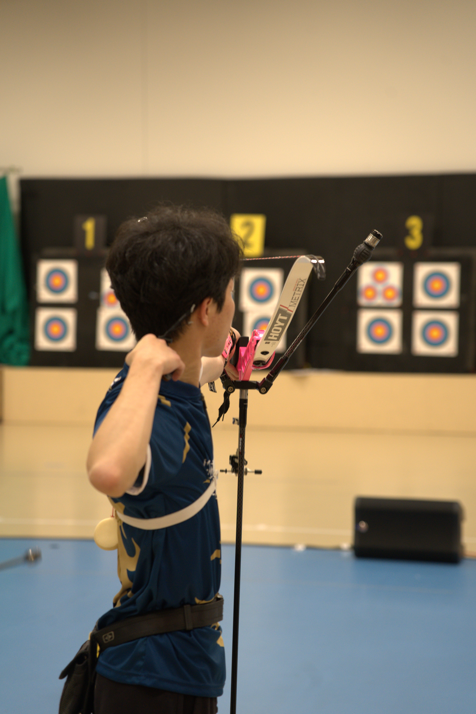
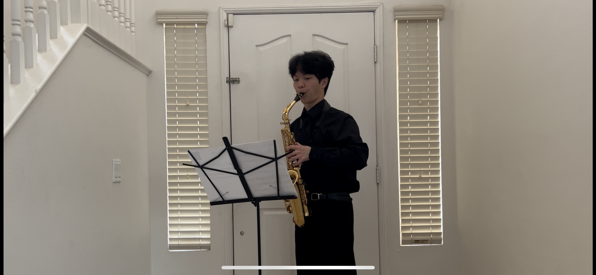

Data science · UC San Diego
Finding the story
in the data.
Hi, I'm Jared Wang.
I'm a Data Science student at UC San Diego, exploring real-world questions through analysis, visualization, and a little curiosity.
GitHub (opens in a new tab)
Resume (opens in a new tab)
LinkedIn (opens in a new tab)
YouTube (opens in a new tab)
jaredjcwang@gmail.com
A few things I've been working on
Selected work.
Outside the dataset
Away from
the screen.
When I'm not working with data, you'll find me at the archery range or playing the saxophone. Two different ways to slow down, pay attention, and keep learning.

